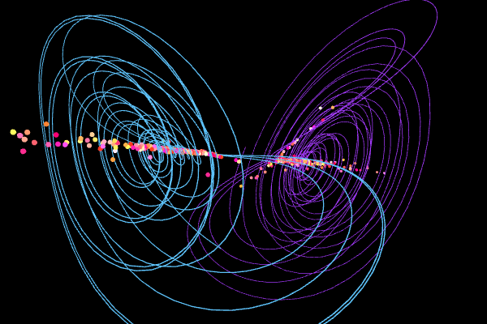

Midterm 2 (Due 14 Nov)#
Fall 2025
Practicalities about Midterms
You can work in pairs or by yourself. If you work as a pair you can hand in one answer only if you wish. Remember to write your name(s)! You may collaborate with others (optimal group size 3-4).
How do I(we) hand in? You can hand in the paper and pencil exercises as a single scanned PDF document. Your jupyter notebook file should be converted to a PDF file, attached to the same PDF file as for the pencil and paper exercises. All files should be uploaded to Gradescope.
Cite any resources you use for your midterm, and you can, of course, meet with any instructors or ask any questions in class about the midterm. We will not work any of the exercises on the midterm in help sessions as we have with homework exercises.
Midterms are meant to be challenging and might cover topics and areas that we have not covered directly in class. They might also ask you to complete your own research or design your own model; there are plenty of resources available on the course website and you are welcome to ask any instructors for help or guidance.
Instructions for submitting to Gradescope.
Exercise 1 is marked Submit on D2L, you must do submit this separately to D2L. The work on Exercise 1 will be graded pass/fail and may be completed with a different partner than your homework group. You are submitting to D2L, so that Danny can give you feedback on your work in a timely manner to help with questions on your project and guide its development.
Reminder of AI Policy for our class
We adopt a policy that allows AI use for brainstorming, help, and editing.
AI cannot be used for direct answers or completion of assignments.
We expect documentation of AI use, but it can be informal.
Violations are discussed with Danny; the first violation requires a redo of the assignment, and repeated violations result in a failing grade.
What is informal documentation?
A summary of the use of AI and the kinds of questions asked, and what the AI replied with. Detailed prompts and replies are not needed but the extent to which AI was used to create products in the midterm is important to document. Of course, this is a minimal standard. You can include more detailed documentation such as screenshots of your interactions. The benefit of including screenshots, especially for project work, is that instructors can help you use AI tools more effectively.
Midterms in this class are also a learning opportunity. There are different ways to arrive at the solutions and you might have to learn something new to develop that solution. Using your resources and asking for help from instructors is very much encouraged, especially early on for the more open-ended exercises.
import numpy as np
from math import *
import matplotlib.pyplot as plt
import pandas as pd
%matplotlib inline
plt.style.use('seaborn-v0_8-colorblind')
Part 1, Project Check-in 2 (20pt)#
Submit on D2L
This is the second of three check-ins for your final project. Last week, you submitted your first “annual” report. This week, you will submit another report on your progress. This is a chance for you to reflect on your project and to make sure you are on track for the final project.
A second report typically has more details than the first because you have made more progress on your project. You should reflect on the work you have done so far, any challenges you have faced, and any changes you need to make to your project plan. This is also a chance for you to ask for feedback. Notice that the questions remain roughly the same as the first report (this is true in science also).
1a (5 pts). Review your project status. What have you been able to accomplish so far? What were you unable to do in the time you had? Be honest in your evaluation of your progress. You will not be penalized for not reaching your milestones. What does that mean you need to prioritize in the coming weeks? (at least 250 words)
1b (5 pts). What problems have you encountered in doing you research? What questions came up and how did you resolve them? Are there any unresolved questions? (at least 250 words)
1c (5 pts). Provide an updated artifact from your project. This could be a plot, a code snippet, a data set, or a figure. Explain what this artifact is and how it fits into your project. (at least 100-200 words)
1d (5 pts). Update your project timeline and milestones. How will you adjust your timeline to account for the work you have done and the work you have left to do? (at least 100-200 words)
Submit on D2L
Part 2, The Duffing Oscillator (60pt)#
Consider the following equation of motion for a damped and driven oscillator that is not necessarily linear. This is the Duffing equation, which describes a damped driven simple harmonic oscillator with a cubic non-linearity. It’s equation of motion is given by:
where \(\alpha\), \(\beta\), \(\delta\), \(\gamma\), and \(\omega\) are constants.
Below is a figure showing the strange attractor of the Duffing Oscillator over four periods. It is locally chaotic, but globally it is confined. This is a common feature of some non-linear systems.

We focus on this one dimensional case, but we will analyze it in parts to put together a full picture of the dynamics of the system. If you are looking for useful parameter choices and initial conditions, we suggest using those listed on the Wikipedia page.
Recall that the potential for this system can give rise to different kinds of behavior depending on the parameters. The figure below shows the potential for different choices of \(\alpha\) and \(\beta\). Make sure you choose your parameters to match the potential you want to study - pick a stable well for solving for trajectories.

Undamped and undriven case (20 points)#
2a. (5 pt) Consider the undriven and undamped case, \(\delta = \gamma = 0\). What potential would give rise to this kind of equation of motion? Demonstrate that potential gives the expected equation of motion.
2b. (5 pt) Find the equilibrium points of the system for the undriven and undamped case. What are the conditions for stable and unstable equilibrium points? Plot the potential for some choices of \(\alpha\) and \(\beta\) to illustrate your findings.
2c. (5 pt) Plot the phase space for the undriven and undamped case. What are the trajectories of the system? What is the behavior of the system? Does it match your expectations from the potential? The figure above only starts this discussion.
2d. (5 pt) Here you are likely to need a numerical solver. Solve the equation of motion for the undriven and undamped case for a reasonable choice of \(\alpha\) and \(\beta\) and initial conditions. Plot the position as a function of time. What is the behavior of the system? Does it match your expectations from the potential and the phase portrait?
Damped and undriven case (15 points)#
2e. (5 pt) Now consider the damped and undriven case, \(\gamma = 0\). What is the equation of motion in this case? Can you develop this equation of motion fully from a potential (like we did above)? If so, what is the potential? If not, why not?
2f. (5 pt) Plot the phase space for the damped and undriven case. What kinds of trajectories are there?
2g. (5 pt) Here you are likely to need a numerical solver. Solve the equation of motion for the damped and undriven case for a reasonable choice of \(\alpha\), \(\beta\), \(\delta\), and initial conditions. Plot the position as a function of time. What is the behavior of the system? Does it match your expectations from the phase portrait?
Driven and damped case (20 points)#
2h. (5 pt) Now consider the damped and driven case, \(\gamma \neq 0\). What is the equation of motion in this case? Can you develop this equation of motion fully from a potential (like we did above)? If so, what is the potential? If not, why not?
2i. (5 pt) Is it possible to plot the phase space for the driven and damped case? Why or why not? What solutions are available to you to understand the behavior of the system in phase space? Here we are not looking for you to solve the problem, but to conduct research into how people make sense of the behavior of driven and damped systems.
2j. (10 pt) Here you are likely to need a numerical solver. Solve the equation of motion for the driven and damped case for a reasonable choice of \(\alpha\), \(\beta\), \(\delta\), \(\gamma\), \(\omega\), and initial conditions. Plot the position as a function of time. What is the behavior of the system?
Parameter Change (5 points)#
2k. (5 pts) The Duffing oscillator can be either a soft or hard spring by changing the sign of the \(\alpha\) term. What happens to the behavior of the system when you change the sign of \(\alpha\)? Can you explain this behavior in terms of the potential?
Extra credit (up to 20 points)#
2l. (20 pts) A critical tool for understanding the behavior of the Duffing oscillator is the Poincaré section. Can you implement a Poincaré section for the driven and damped case? What does it tell you about the behavior of the system?
Part 3, Strange Attractor (40pt)#
We learned about Strange Attractors when modeling the Lorenz system in class. In this part of the exam, we will explore the Chen system, which is another example of a system that exhibits chaotic behavior and has a strange attractor. The Chen system is given by the following set of ordinary differential equations:
where \(\alpha\), \(\beta\), and \(\delta\) are constants that determine the behavior of the system. For this problem, we will use the following values:
Parameter |
Value |
|---|---|
\(\alpha\) |
5.0 |
\(\beta\) |
-10.0 |
\(\delta\) |
-0.38 |
Visualization of the Chen System

Numerical Integrate the Chen System (10 points)#
3a. (5 pts) For this choice of parameters, numerically integrate (using
solve_ivpor a similar integrator) the Chen system over a reasonable time interval (e.g., 100 time units). Recall that forsolve_ivp, you need to specify the time span and initial conditions. For the initial conditions, you can choose \(x(0) = y(0) = z(0) = 1.0\). Integrate for at least 100 time units. This will give you a starting point to observe the chaotic behavior of the system.3b. (5 pts) Plot the system in 3D and in 3 subplots showing the projection of the trajectory in the \(x-y\), \(x-z\), and \(y-z\) planes.
Comparing Trajectories (20 points)#
3c. (10 pts) For two nearby points in phase space, numerically integrate the Chen system for 100 time units.
Use the same initial conditions as before, but slightly perturb one of the points (e.g., \(x(0) = 1.0\), \(y(0) = 1.0\), \(z(0) = 1.0\) for the first point and \(x(0) = 1.01\), \(y(0) = 1.0\), \(z(0) = 1.0\) for the second point).
Plot both trajectories in 3D to observe how they diverge over time. How can you tell that the system is chaotic from this behavior? What features of the trajectories indicate chaotic behavior?
Estimate the Lyapunov Exponent, and explain how you did so.
3d. (10 pts) The Chen system has two attractors that we can observe. Which attractor we end up on depends on the initial conditions. To illustrate this, numerically integrate the Chen system for 100 time units with two different sets of initial conditions.
For example, you can use \(x(0) = y(0) = z(0) = 1.0\) for the first trajectory and \(x(0) = y(0) = z(0) = -1.0\) for the second trajectory.
Plot both trajectories in 3D and in 3 projections (\(x-y\), \(x-z\), and \(y-z\)) to observe the different attractors that the system can exhibit. How can you tell that the system is chaotic from this behavior? What features of the trajectories indicate chaotic behavior?
Estimate the Lyapunov Exponent, and explain how you did so. How do these estimates of the Lyapunov Exponents between 3c and 3d compare?
Checking Sensitivity to Initial Conditions (10 points)#
3e. (10 pts) For the Chen system integrate a bundle of trajectories (\(N>100\)) with slightly different initial conditions. Make sure that your conditions are such that you cover both attractors. Plot the starting and ending points of the trajectories in 3D and in 3 projections (\(x-y\), \(x-z\), and \(y-z\)). How can you tell that the system is chaotic from this behavior? What features of the trajectories indicate chaotic behavior?
Extra Credit (up to 20 points)#
3f. (20 pts) Through this problem, you should have developed a set of tools and codes that can be applied to any nonlinear system of differential equations. Apply your analysis techniques to a new system of your choosing and demonstrate how the system is or can become chaotic. Make sure to focus on the what we have seen as the hallmarks of chaotic systems. You might use this link for inspiration: https://www.dynamicmath.xyz/strange-attractors/
Extra Credit - Integrating Classwork With Research#
This opportunity will allow you to earn up to 5 extra credit points on a Homework per week. These points can push you above 100% or help make up for missed exercises. In order to earn all points you must:
Attend an MSU research talk (recommended research oriented Clubs is provided below)
Summarize the talk using at least 150 words
Turn in the summary along with your Homework.
Approved talks: Talks given by researchers through the following clubs:
Society for Physics Students (SPS)
Astronomy Club
Facility For Rare Isotope Beam (FRIB) Seminars
Any other seminar or talk on physics or astrophysics is ok